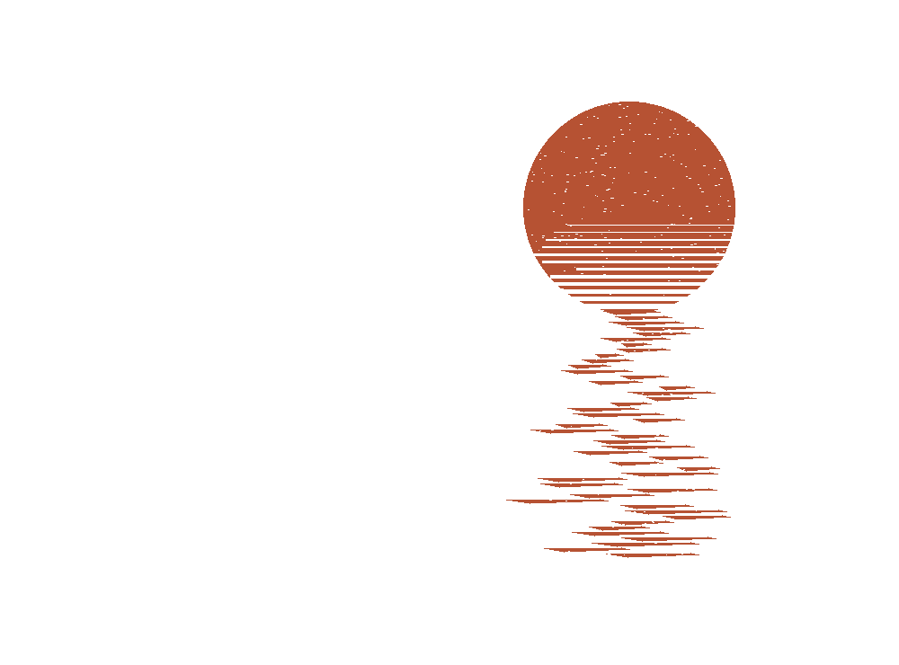

Low water
A cut-paper coast in two inks. Isolate a plate to see which marks make the light on the water.


Print notes
- Kelp
- Headland, beacon and tidal cuts
- Oxide
- Sun disc and broken reflection
- Register
- 1,000 × 740 pixels per plate
A cut-paper coast in two inks. Isolate a plate to see which marks make the light on the water.
